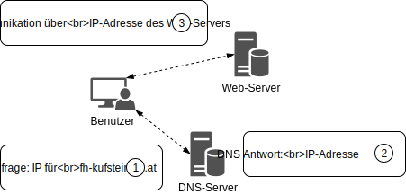

World Wide Web (WWW)
Das WWW ist ein globales und verteiltes Informationssystem bestehend aus Webseiten und anderen Web-Ressourcen (zB Bilder, Videos, ...). Web-Ressourcen werden auf Web-Servern bereitgestellt und sind öffentlich abrufbar. Web-Ressourcen sind über einen Uniform Resource Locator (URL) eindeutig identifiziert und abrufbar. Webseiten sind im WWW über Hyperlinks miteinander verknüpft, welche wiederum als URL ausgedrückt werden. Webseiten können über Web-Browser (auch Web-Clients genannt) geladen und bedient werden.

Technische Grundlagen
Das technische Fundament für das WWW bildet das Internet. Das Internet ist ein globales Netzwerk (Internet = interconnected network), welches Computer und andere Computer Netzwerke (Intranets) miteinander verknüpft. Umgangsprachlich wird das WWW mit dem Internet oft gleichgesetzt. Aus einer technischen Perspektive ist dies jedoch nicht der Fall.
Uniform Resource Locator (URL)
Eine URL ist eine global eindeutige "Adresse" einer Web-Ressource. Zusätzlich zur Identifikation gibt eine URL Aufschluss über den Speicherort einer Web-Ressource. Ein Web-Browser kann über eine URL Web-Ressourcen abrufen und anzeigen. URLs folgen einem definierten syntaktischen Aufbau:
- Schema (Scheme): Das Schema gibt den Typ der URL an. Bekannte Schemata sind zB
http,https,ftpodermailto. Die Schemaangabe wird mit einem:abgeschlossen. - Zuständigkeit (Authority): Wesentlicher Bestandteil der Authority ist der
Host, welcher als Domain-Name oder IP-Adresse angegeben werden kann. Optional kann die Authority eine Benutzerinformation enthalten, welche vor der Host-Angabe steht (Abgeschlossen durch ein@). Optional kann auch eine Port-Angabe angebracht werden (Eingeleitet durch einen:). - Pfad (Path): Der Pfad ist eine hierarchische Angabe einer konkreten Ressource innerhalb einer Authority. Alle Pfadbestandteile werden ähnlich zu einem Dateisystem mittels
/getrennt. - Abfrage (Query): Der Abfrage-Teil (Query-String) wird genutzt um optionale Schlüssel-Wert Paare anzugeben. Ein Query-String wird über ein
?eingeleitet. Schlüssel-Wert Paare werden jeweils über&getrennt. Mit=wird jeweils der Schlüssel mit dem zugehörigen Wert verknüpft. - Fragment: Fragmente können genutzt werden um Teile eine Ressource zu identifizieren, zB als Anker innerhalb einer Webseite. Fragmente werden über ein
#eingeleitet.
Beispiel einer URL:
userinfo host port
┌──┴───┐ ┌──────┴──────┐ ┌┴┐
https://john.doe@www.example.com:123/abc/def/?name=bla&q=abc#top
└─┬─┘ └───────────┬──────────────┘└───┬───┘ └─────┬──────┘ └┬┘
scheme authority path query fragment
Domain Name System (DNS)
Das Internet basiert auf dem TCP/IP Netzwerk-Stack (Internetprotokollfamilie). Im TCP/IP Netzwerk-Stack werden alle Knoten des Netzwerkes über eine IP-Adresse identifiziert. IP-Adressen sind ähnlich wie Telefonnummern für Menschen schwer einprägsam. DNS ist ein Internet-Dienst welcher, ähnlich zu einem Telefonbuch, Klarnamen zu IP-Adressen verwaltet und abrufbar macht.
Beispielhafter Auszug aus der Datenbank eines DNS-Servers:
wikipedia.org 185.102.12.2
fh-kufstein.ac.at 85.234.32.2
... ...
Typischer Ablauf einer DNS-Abfrage: 
Der Web-Browser nimmt in der Adresszeile einen URL entgegen, welcher unter anderem auch einen Domain-Namen enthält. Der Web-Browser macht im ersten Schritt eine Anfrage an den DNS-Server um die IP-Adresse des entsprechenden Domain-Namen zu erhalten. Erst nach Erhalt der IP-Adresse kann eine HTTP-Anfrage an den entsprechenden Web-Server gesendet werden.
HTTP-Protokoll
Das Hypertext Transfer Protocol (HTTP) ist ein zustandsloses Netzwerkprotokoll zur Übertragung von Daten in Rechnernetzen. Es wird hauptsächlich eingesetzt, um Webseiten aus dem WWW zu laden. Es ist jedoch nicht prinzipiell darauf beschränkt und auch als allgemeines Dateiübertragungsprotokoll verbreitet.
Die Kommunikation findet dabei zwischen einem Client und Server statt. Die Kommunikation folgt dem Anfrage/Antwort Schema. Der Client sendet eine Anfrage und bekommt eine Antwort vom Server.

Web-Browser
Ein Web-Browser ist eine Software-Applikation, welche genutzt wird um auf das WWW zuzugreifen. Die populärsten Web-Browser sind Chrome, Firefox, Safari, Internet Explorer, Edge und Opera.

Web-Browser bieten folgende ähnliche Bedienelemente:
Tabsum mehrere Webseiten gleichzeitig zu öffnen. DerTiteleiner Webseite bzw. das sog.Faviconwerden ebenfalls im Tab angezeigt.- Eine
Adressleistezur Eingabe der URL welche geladen werden soll. Für gesicherte Verbindungen (https) wird dies über einSchloss-Symbolangezeigt. Die Adressleiste fungiert meist auch alsEingabezeile für Suchmaschinen. Vor- und Zurück-Buttonsum in der Browser-Historie zu navigieren.- Ein Button zum Neuladen einer Webseite (
RefreshoderReload). Während des Ladens fungiert dieser alsStop-Buttonum das Laden abzubrechen. - Ein
Home-Buttonläd eine hinterlegte Home-Seite. - Mittels
Bookmarks/Lesezeichenkönnen Links auf Webseiten katalogisiert gespeichert werden. - Innerhalb einer
Download-Historiekönnen vergangene Downloads wiedergefunden werden. - Web-Browser können über
Extensionserweitert werden.

W3C und Standardisierung
Das World Wide Web Consortium (W3C) ist die primäre internationale Standardisierungsorganisation des WWW. Das W3C ist für die Standadisierung der technischen Grundlagen des WWW zuständig. Gründer und Vorsitzender des W3C ist Tim Berners-Lee. Tim Berners-Lee ist der "Erfinder" des WWW.
Der W3C Standadisierungsprozess gliedert sich in Dokumente mit unterschiedlichem Reifegrad:
- Working Draft (WD): Über Arbeitsentwürfe unter Einbeziehung der Öffentlichkeit wird ein Standardisierungsdokument entwickelt
- Candidate Recommendation (CR): Stabiles Dokument, für welches bereits Implementierungen durchgeführt werden
- Proposed Recommendation (PR): Ein PR hat den CR-Status finalisiert und wird an den W3C Advisory Council weitergegeben für eine finale Zustimmung.
- W3C Recommendation (REC): Nach Zustimmung des W3C Advisory Council wird die PR zur W3C-Recommendation bzw. W3C Standard.
Beispiele für W3C Recommendations sind HTML, XML, CSS, PNG, SVG, DOM.
Clientseitige Web-Technologien
Zur Entwicklung von Webseiten bzw. Web-Anwendungen werden standardisierte Web-Technologien genutzt:
- Hypertext Markup Language (HTML): HTML wird genutzt um Inhalte zu strukturieren
- Cascading Stylesheets (CSS): CSS wird genutzt um Inhalte zu formatierung bzw. zu gestalten
- JavaScript: Mit JavaScript wird Verhalten und Dynamik in eine Webseite integriert